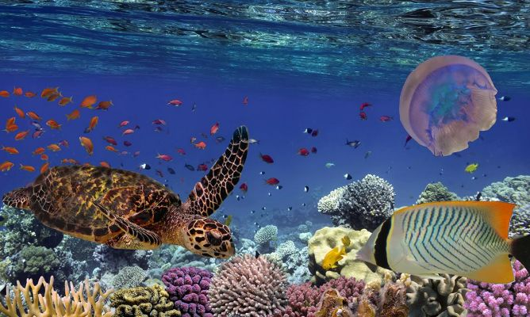

Además de cubrir una extensión de más del 70% de la superficie de la Tierra, el océano es de especial importancia para la especie humana. Estas inmensas masas de agua albergan unas corrientes oceánicas que determinan las condiciones meteorológicas en el mundo y rigen la salud del planeta. Además, estas aguas albergan una increíble biodiversidad de la cual, aun a día de hoy, queda mucho por descubrir. La biodiversidad marina es un elemento fundamental para el desarrollo sostenible, tanto a nivel económico, social y ambiental, y deviene un sustento para la salud, el bienestar y la prosperidad para el ser humano. Entre los animales marinos se hallan los descendientes de los organismos más antiguos conocidos. De hecho, hasta donde sabemos, la vida tuvo sus inicios en los océanos primitivos de la era geológica Precámbrica, hace miles de millones de años. Sin embargo, no todas las formas de vida tienen el mismo origen, ya que muchas especies de reptiles y mamíferos marinos provienen de especies de tierra firme, que se adaptaron nuevamente al océano. El mar es hogar, además, de millones de especies de microorganismos y de especies vegetales, que cumplen un rol importantísimo en la oxigenación del planeta. Además, sostienen el resto de la cadena trófica marina. Es decir que los océanos son una importante fuente de biodiversidad en el mundo y de alimento constante para diversas especies no marinas, entre ellas el propio ser humano.